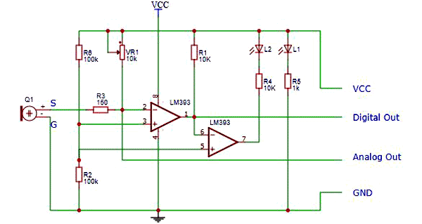
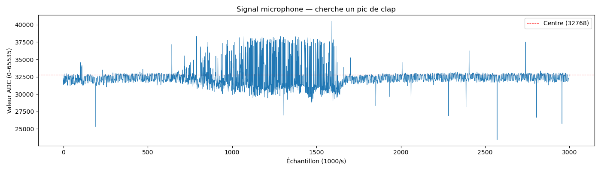
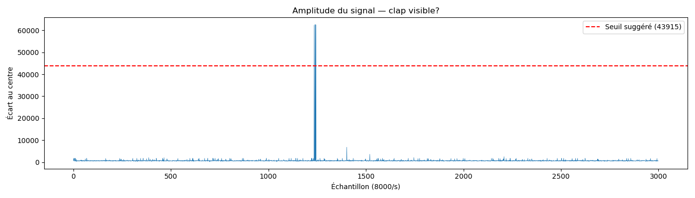
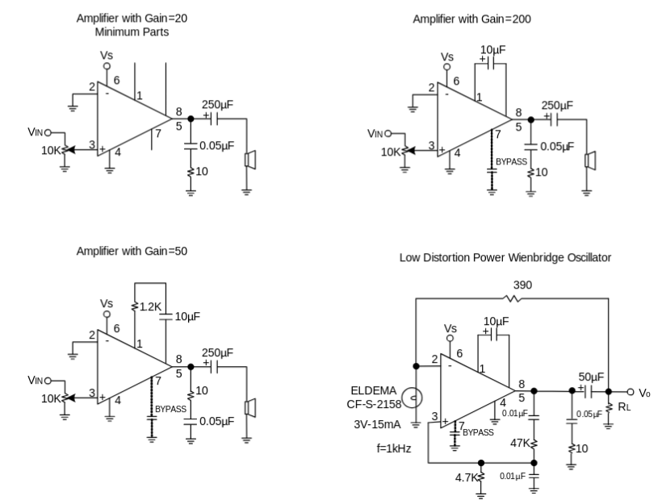
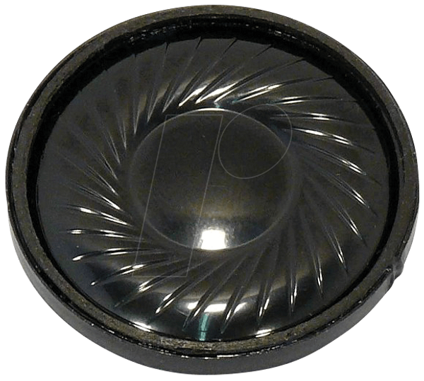
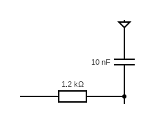
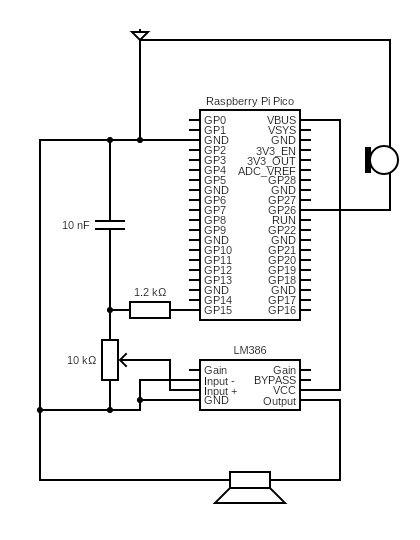

Explication du hardware
Ci-dessous se trouve un schéma du montage expérimental du talkiewalkie, qui était le but original de notre projet, dont nous allons, dans un premier temps, expliquer le fonctionnement au cours de ce circuit au long de cette page. Nous allons donc commencer par donner une explication de chacun des composants du talkiewalkie. Dans un deuxième temps, nous expliquerons le fonctionnement du projet final, bien qu'il soit très similaire, nous donnerons des indications sur les différences entre les deux systèmes, notamment au niveau des filtres du microphone qui ne sont pas présents et du différent pin utilisé sur le micro afin de ne pas avoir de difficultés en ce qui concerne la détection du son.

Ci-dessus vous trouvez le schéma simplifié du talkie-walkie. La batterie est connectée à un interrupteur qui sera ignoré dans l'explication du circuit (parce qu'il ne sert qu'à arrêter l'alimentation). Le reste du schéma sera expliqué plus bas sur la page. L'objet violet avant le haut-parleur correspond à l'amplificateur audio.
Raspberry Pi Pico H

Seuls les pins GP15 et GP26 sont utilisés dans notre circuit, en plus du 3V3OUT et du VBUS pour l'alimentation de l'amplificateur audio et du micro. Il est important de noter qu'il n'y a pas de réelle raison pour laquelle nous avons utilisé le GP15 et le GP26 plutôt que d'autres pins.
Le Raspberry Pi Pico H est le centre du talkie-walkie étant donné que c'est dans le chip de ce dernier que l'on effectue l'exécution du programme et tous les calculs relatifs à la lecture des signaux électroniques comme la radio (qui n'a pas été possible d'utiliser, malheureusement) ou le haut-parleur. Au cours de ce projet, nous avons fait usage du GP15 (pin20 selon la numérotation physique) pour l'entrée audio (depuis le micro), du GP26 (pin31) pour la sortie audio (vers le haut-parleur). Je ne me lancerais ici pas dans une explication détaillée du Pico H, mais le gros à comprendre est que c'est une sorte mini-ordinateur qui peut lire, traiter et envoyer des signaux électroniques.
Module Microphone Arduino Analogue MODUL2 (SE019)

Le module microphone, comme vous le voyez ici, possède quatre pins. Les plus intéressants sont le pin A0 (analogue) et D0 (digital), expliqués ci-dessous.
Le module microphone d'Arduino composé de quatre PIN que nous avons tous essayé d'utiliser à un moment de ce projet utilisé pour notre projet. En plus de ces pins, le gros boitier bleu est un potentiomètre qui est connecté au reste du module selon le schéma ci-dessous:

En bref, le potentiomètre permet de faire 1. varier la différence entre un signal audio fort et faible pour le pin A0, et 2. si on utilise le pin D0, il sert à changer le niveau sonore nécessaire pour envoyer un signal électrique.
'G' (Ground) est la terre du microphone et enfin l'alimentation est signalée par un '+'. Le pin A0 transmet le son qu'il capture sous la forme d'un signal électronique qu'il nous est possible d'enregistrer et de retransmettre à notre haut-parleur. Ce pin était très problématique à utiliser car la qualité audio étant terrible (logique, c'est un micro à 2.-) souvent il ne transmettait que des sons extrêmement forts (p.exemple si l'on souffle dessus). Après avoir cherché à calibrer le potentiomètre pour voir si cela pourrait avoir une influence, il s'est avéré que non.
Une fois que je me suis rendu compte qu'il m'était impossible d'enregistrer du son comme ma voix, j'ai essayé de faire en sorte que si le signal analogue dépassait un certain seuil (lu sur la Raspberry), il effectue une action. Malheureusement la sensibilité extrême du signal couplée au fait que les câbles ne transmettent pas sans bruit le signal, le nombre de faux positifs était extrêmement élevé. Raison pour laquelle, finalement, je me suis replié sur le D0 qui ne fonctionne qu'avec un signal '0' et '1' (s'il y a un son supérieur au seuil réglé par le potentiomètre, il envoie un signal, sinon il n'y a rien).

Ci-dessus une situation où on souffle sur le micro avec le pin A0.

Ici une situation où on tape des mains, pin D0. Comme vous pouvez le voir, le A0 a plein de pics aléatoires, ce sont des faux positifs. Il nous est impossible d'utiliser ceci de manière efficace pour détecter des claps. (Précision : la légende de 8000/s est fausse, c'est toujours 1000/s.)
Amplificateur audio LM386

Le LM386 fait ce qui est dans le nom: l'amplificateur audio amplifie l'audio qu'il reçoit. On peut régler les gains de l'audio soit en plaçant un condensateur ou une résistance (voir les deux entre les pins 1 et 8). Le bypass n'est pas d'une utilité particulièrement *utile* pour notre application, donc nous le laissons de côté. Le input négatif ('input -' sur le schematic) doit être connecté au ground (un signal audio vient toujours sous la forme de deux câbles). L'input positif à la sortie audio sur le Raspberry Pico. Le pin VCC correspond à l'alimentation et enfin le pin 'output' sort le signal amplifié.

Voici différents circuits possibles afin de changer le gain. Dans notre cas, nous utilisons le premier (gain 20 avec un nombre de pièces minimum).
Haut-parleur 2W

Le haut-parleur possède un pin ground et un pin input. Pas grand-chose d'autre à dire.
Filtre low-pass (Filtre RC)
Donner une explication détaillée d'un filtre low-pass serait trop long pour ce site internet, donc je vais abréger: un filtre low-pass supprime toutes les fréquences supérieurs à une certaine fréquence selon le design du filtre. En règle générale, un filtre low-pass est constitué d'un condensateur (deux plaques conductrices proches les unes des autres, faisant que l'appareil puisse supprimer certaines fluctuations) et d'une résistance. Dans notre cas, nous utilisons un condensateur 10nF et une résistance 1.2kΩ.

Ci-dessus le filtre RC que j'ai utilisé pour l'amplificateur audio lorsque le microphone était en A0. La fréquence de coupure est donnée par la formule: Fc=1/(2π*R*C), où 'R' est la résistance, et 'C' le condensateur. Dans notre cas: Fc=1/(2π * 1.2*1e3 [Ω] * 1e-8 [F])=13kHz (noter que la voix humaine est entre 0.3-3kHz donc pas de problème ici).
Circuit final

Vous trouvez ci-dessus le schéma du montage final, vous verrez qu'il n'y a pas le module radio, puisque l'un des deux ne fonctionnant plus, nous ne pouvions pas les utiliser. Le circuit final est un détecteur de clap qui produit un bip si c'est le cas. Le programme est détaillé ici.
Le circuit final est relativement simple, du moins en apparence. Il a demandé beaucoup d'expérimentation et de tâtonnement afin de correctement relier certains
composant puisque souvent il y avait des petites imprécisions (p.ex: j'avais oublié au début de brancher le 'input -' du LM386 sur le ground). Vous noterez la
présence d'un potentiomètre avant l'entrée du signal dans le LM386, celui-ci sert à ajuster le son. On pourrait faire sans, mais je l'ai ajouté afin d'avoir
un moyen de régler le son sans modifier le gain, sans oublier que le potentiomètre est intégré dans la documentation officielle (c.f. schéma 2 du LM386).
Maintenant une brève explication du schéma. Le micro enregistre le son, il envoie ce signal au pin GP26 depuis son pin D0, le Raspberry, s'il détecte un signal
envoie depuis le pin GP15 une fonction sinusoïdale (ce qui correspond à un bip régulier). Ce signal passe à travers le filtre RC, que j'ai expliqué en détail
dans la partie précédente. Il faut noter que ce filtre, dans notre cas, sert à atténuer les signaux forts du PWM afin que le son ne se noie pas. Si on enlève ce
dernier, on aura du bruit pur, ce qui certes permet de savoir si on a tapé des mains, mais ce n'est pas super pro. Une fois le filtre passé, le signal rentre
dans l'amplificateur audio qui est réglé pour un gain de 20 (c.f. schéma 2 du LM386). Depuis là, le signal de sortie passe à travers
un condensateur 220 µF, qui sert juste à supprimer des petits bruits de fond: on pourrait faire sans mais c'est de la qualité en plus donc
on le garde quand même. Et finalement le signal entre dans le haut-parleur pour jouer le son.